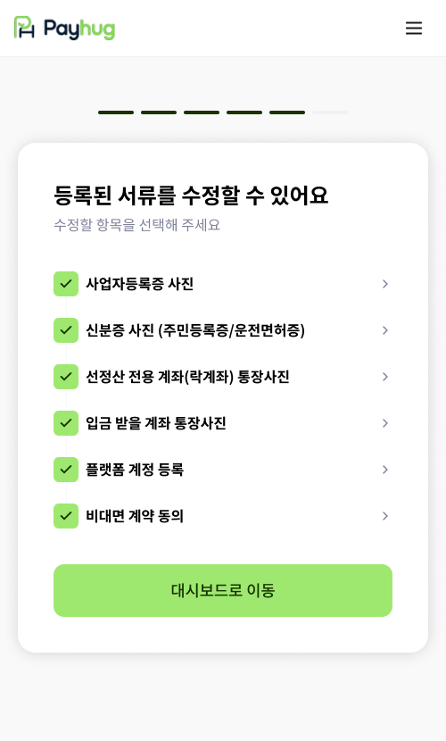

PART 3 · 신청 이후 ~ 선정산 개시
21
심사 대기 — 기다리는 동안에도 서류를 고칠 수 있습니다
서류가 다 차면 따로 신청 버튼을 누르지 않아도 심사가 시작됩니다
1 심사 대기 안내

「승인 대기 중이에요」
계약이 접수되면 이 안내가 뜹니다. 여기서 사장님은 대시보드로 나가시거나, 「서류 수정하기」로 들어가실 수 있습니다.
›
2 서류 수정

여섯 가지를 항목별로 다시 손봅니다
사업자등록증, 신분증, 선정산 전용계좌(락계좌) 통장사진, 입금 받을 계좌 통장사진, 플랫폼 계정, 비대면 계약 동의. 고칠 것만 골라 들어가면 됩니다.
잘못 올린 걸 나중에 발견하셔도 처음부터 다시 하지 않습니다. 심사가 돌아가는 중에도 그 항목만 골라 다시 올리시면 됩니다.
1
"심사 신청" 버튼은 따로 없습니다
여섯 가지 서류가 모두 등록되면 계약이 접수되고, 그때부터 자동으로 심사 대기 상태가 됩니다. 사장님이 뭘 더 누르실 필요는 없습니다.
2
이 목록이 곧 진행 상황입니다
서류 수정 화면의 여섯 줄에 체크가 다 차 있으면, 사장님 쪽에서 하실 일은 끝난 겁니다. 비어 있는 줄이 있으면 그게 남은 숙제고요.
3
심사에 걸리는 기간
협의 예정
며칠이 걸리는지는 아직 양사가 협의하기 전입니다. 현장에서 기간을 못 박아 말씀하지 마시고, "심사가 끝나면 앱과 알림으로 알려드립니다"라고만 안내해 주세요.
가맹점 앱 · 심사 대기 / 서류 수정 화면 원본
payhug